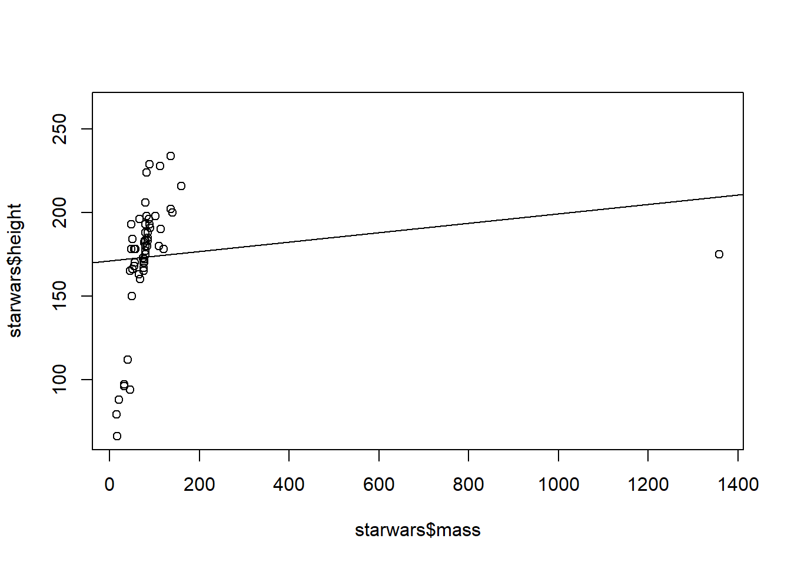

15 Assignment 1 in Rmarkdown
15.1 R Markdown
- Who is the tallest individual? Shortest?
#> Min. 1st Qu. Median Mean 3rd Qu. Max. NA's
#> 66.0 167.0 180.0 174.4 191.0 264.0 6- How many homeworlds are there?
#> # A tibble: 49 x 1
#> homeworld
#> <chr>
#> 1 Tatooine
#> 2 Naboo
#> 3 Alderaan
#> 4 Stewjon
#> 5 Eriadu
#> 6 Kashyyyk
#> 7 Corellia
#> 8 Rodia
#> 9 Nal Hutta
#> 10 Bestine IV
#> # ... with 39 more rows- Which homeworld has the most individuals? Fewest? Average # of individuals per homeworld?
#> # A tibble: 49 x 2
#> homeworld n
#> <chr> <int>
#> 1 Naboo 11
#> 2 Tatooine 10
#> 3 <NA> 10
#> 4 Alderaan 3
#> 5 Coruscant 3
#> 6 Kamino 3
#> 7 Corellia 2
#> 8 Kashyyyk 2
#> 9 Mirial 2
#> 10 Ryloth 2
#> # ... with 39 more rows
#> # A tibble: 49 x 2
#> homeworld n
#> <chr> <int>
#> 1 Aleen Minor 1
#> 2 Bespin 1
#> 3 Bestine IV 1
#> 4 Cato Neimoidia 1
#> 5 Cerea 1
#> 6 Champala 1
#> 7 Chandrila 1
#> 8 Concord Dawn 1
#> 9 Dathomir 1
#> 10 Dorin 1
#> # ... with 39 more rows4-6. Make a plot of all individuals with mass on the x axis and height on the y axis. Put a best fit line on this plot. Who is the biggest outlier in this dataset?

#> # A tibble: 1 x 3
#> name mass height
#> <chr> <dbl> <int>
#> 1 Jabba Desilijic Tiure 1358 175- Calculate BMI for all these individuals. What is the average BMI for all individuals?
Via google: With the metric system, the formula for BMI is weight in kilograms divided by height in meters squared. Since height is commonly measured in centimeters, an alternate calculation formula, dividing the weight in kilograms by the height in centimeters squared, and then multiplying the result by 10,000, can be used
#> # A tibble: 59 x 4
#> name BMI height mass
#> <chr> <dbl> <int> <dbl>
#> 1 Luke Skywalker 26.0 172 77
#> 2 C-3PO 26.9 167 75
#> 3 R2-D2 34.7 96 32
#> 4 Darth Vader 33.3 202 136
#> 5 Leia Organa 21.8 150 49
#> 6 Owen Lars 37.9 178 120
#> 7 Beru Whitesun lars 27.5 165 75
#> 8 R5-D4 34.0 97 32
#> 9 Biggs Darklighter 25.1 183 84
#> 10 Obi-Wan Kenobi 23.2 182 77
#> # ... with 49 more rows
#> # A tibble: 1 x 1
#> `mean(BMI)`
#> <dbl>
#> 1 32.0- What is the average BMI for each homeworld?
#> # A tibble: 40 x 2
#> homeworld avg.BMI
#> <chr> <dbl>
#> 1 Nal Hutta 443.
#> 2 Vulpter 50.9
#> 3 Kalee 34.1
#> 4 Bestine IV 34.0
#> 5 <NA> 32.6
#> 6 Malastare 31.9
#> 7 Trandosha 31.3
#> 8 Tatooine 29.3
#> 9 Sullust 26.6
#> 10 Dathomir 26.1
#> # ... with 30 more rows- Which homeworlds have the greatest percentage of individuals with BMI’s greater than the average you found in #8 above? How many individuals have no missing data? Which variables have the most missing data?
#> # A tibble: 5 x 2
#> homeworld avg.BMI
#> <chr> <dbl>
#> 1 Nal Hutta 443.
#> 2 Vulpter 50.9
#> 3 Kalee 34.1
#> 4 Bestine IV 34.0
#> 5 <NA> 32.6- How many individuals have no missing data? Which variables have the most missing data?
#> # A tibble: 29 x 14
#> name height mass hair_color skin_color eye_color
#> <chr> <int> <dbl> <chr> <chr> <chr>
#> 1 Luke Skywa~ 172 77 blond fair blue
#> 2 Darth Vader 202 136 none white yellow
#> 3 Leia Organa 150 49 brown light brown
#> 4 Owen Lars 178 120 brown, grey light blue
#> 5 Beru White~ 165 75 brown light blue
#> 6 Biggs Dark~ 183 84 black light brown
#> 7 Obi-Wan Ke~ 182 77 auburn, wh~ fair blue-gray
#> 8 Anakin Sky~ 188 84 blond fair blue
#> 9 Chewbacca 228 112 brown unknown blue
#> 10 Han Solo 180 80 brown fair brown
#> # ... with 19 more rows, and 8 more variables:
#> # birth_year <dbl>, sex <chr>, gender <chr>,
#> # homeworld <chr>, species <chr>, films <list>,
#> # vehicles <list>, starships <list>